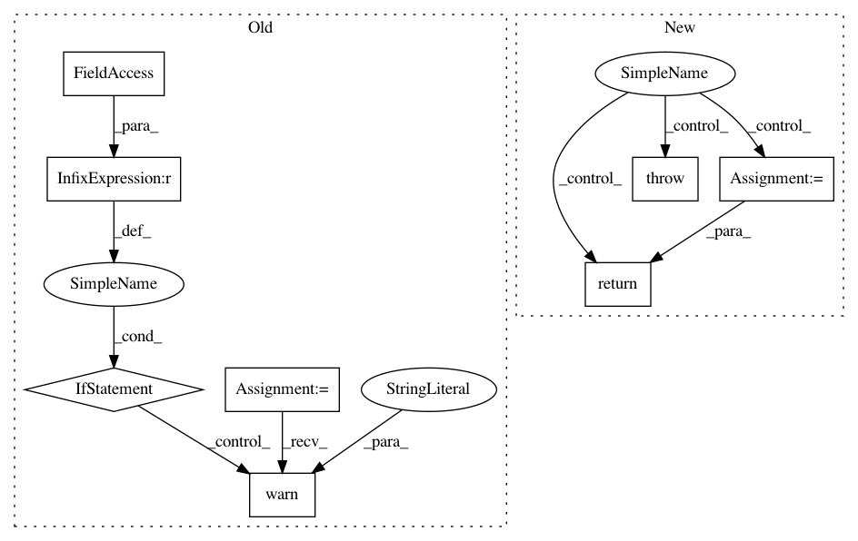

a02e5721ab5babc58e7d41cda5c0aaafe30320d1,tensorboard/backend/event_processing/data_provider.py,MultiplexerDataProvider,read_blob,#MultiplexerDataProvider#Any#,272
Before Change
) = _decode_blob_key(blob_key)
// TODO(davidsoergel, wchargin): consider images, etc.
if plugin_name != graphs_metadata.PLUGIN_NAME:
logger.warn("Directory has no blob data for plugin %r", plugin_name)
raise errors.NotFoundError()
serialized_graph = self._multiplexer.SerializedGraph(run)
// TODO(davidsoergel): graph_defs have no step attribute so we don"t filter
// on it. Other blob types might, though.
After Change
// In case of multiple events at this step, take first (arbitrary).
matching_step = next((e for e in tensor_events if e.step == step), None)
if not matching_step:
raise errors.NotFoundError("%s: no such step %r" % (blob_key, step))
tensor = tensor_util.make_ndarray(matching_step.tensor_proto)
return tensor[index]
// TODO(davidsoergel): deduplicate with other implementations
def _encode_blob_key(experiment_id, plugin_name, run, tag, step, index):
In pattern: SUPERPATTERN
Frequency: 3
Non-data size: 8
Instances
Project Name: tensorflow/tensorboard
Commit Name: a02e5721ab5babc58e7d41cda5c0aaafe30320d1
Time: 2020-01-22
Author: wchargin@gmail.com
File Name: tensorboard/backend/event_processing/data_provider.py
Class Name: MultiplexerDataProvider
Method Name: read_blob
Project Name: tensorflow/cleverhans
Commit Name: f9dd2e3636db61ee1b4d32ee4f494fd9e71adc12
Time: 2017-03-29
Author: ngp5056@cse.psu.edu
File Name: cleverhans/attacks.py
Class Name: FastGradientMethod
Method Name: generate_np
Project Name: tensorflow/cleverhans
Commit Name: f9dd2e3636db61ee1b4d32ee4f494fd9e71adc12
Time: 2017-03-29
Author: ngp5056@cse.psu.edu
File Name: cleverhans/attacks.py
Class Name: Attack
Method Name: generate_np